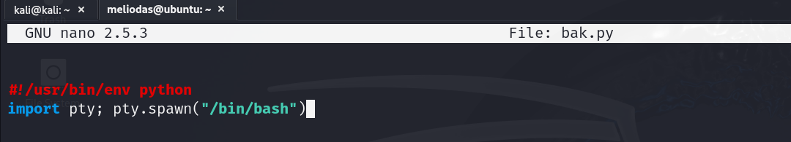

Podemos ver el nombre de la persona que lo ha puesto el post meliodas
Entramos en el robots.txt
Hacemos un ataque de fuerza bruta usando el usuario mediolas y la lista rockyou
Entramos en el usuario, aquí encontramos user.txt
Tenemos un archivo que se encarga de hacer un backup
Vemos los permisos que tenemos
sudo -lBorramos el script de backup
rm -f bak.pyCreamos el archivo de nuevo
Lo ejecutamos y tendremos acceso root
sudo /usr/bin/python3 /home/meliodas/bak.pyVamos a la ruta /root y aquí encontraremos root.txt